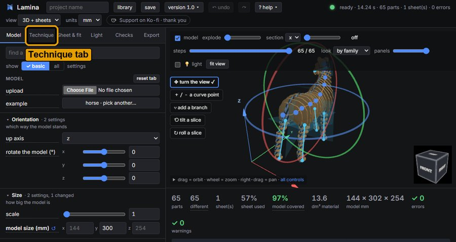
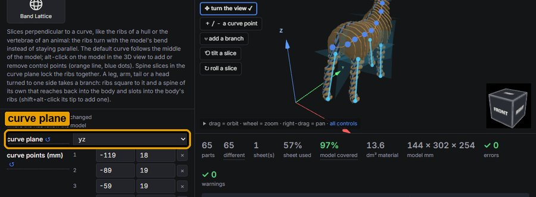
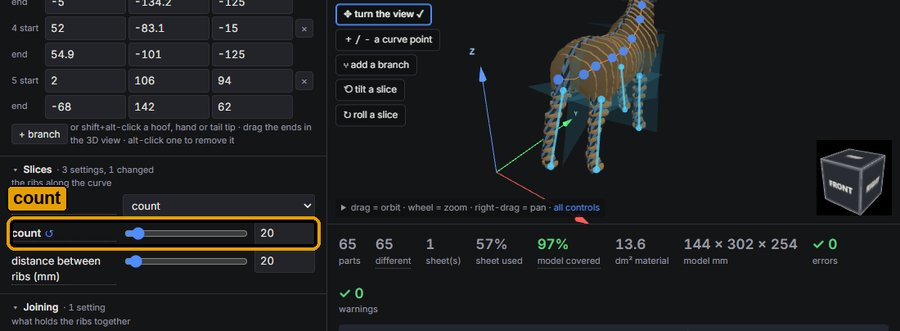
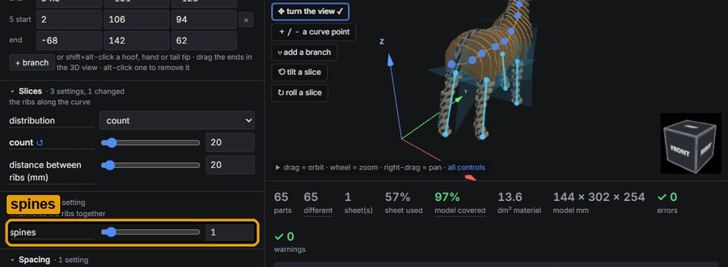
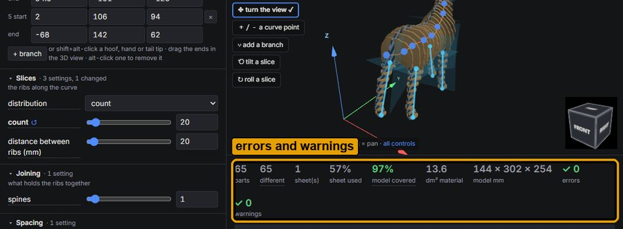
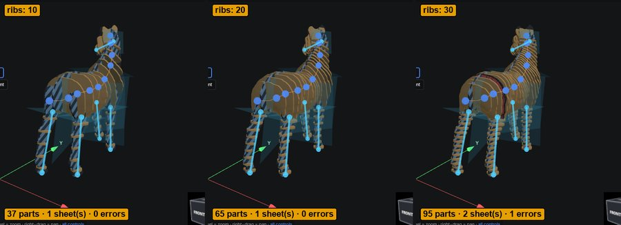
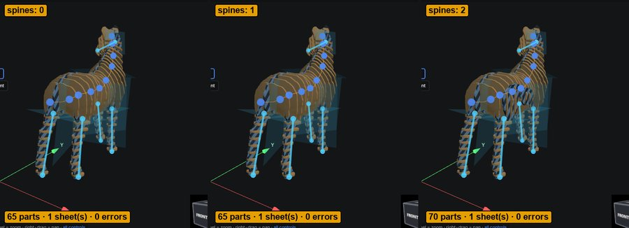
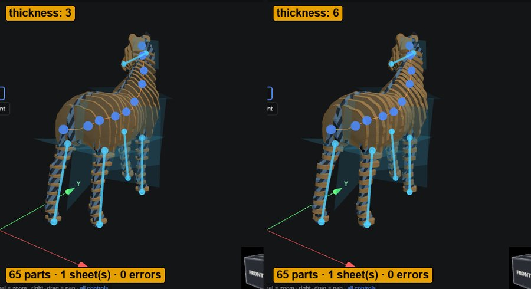
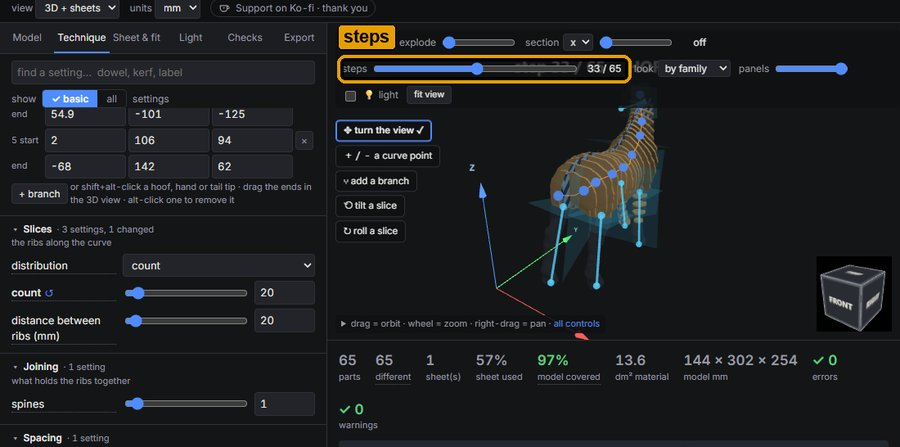

How to make a rib sculpture along a curve
Ribs stand square to a curve that follows the model, like the frames of a hull or the vertebrae of an animal. A spine in the plane of the curve locks them together. A leg, a tail or a head takes a branch of its own. This guide uses Lamina, a free laser slicer that runs in your browser.
- 1. Start hereThe steps every job has: your model, its size, the checks, the files. Open
- 2. Your machineLaser, router or 3D printer, the material and its thickness. Open
- 3. Your technique: this pageThe settings of Curve (ribs), and what each one changes.
Which shapes work
Long shapes that bend: animals, hulls, hooks. The ribs turn with the bend of the model and do not stay parallel. For a shape that does not bend, interlocking slices are simpler.
Set the technique
Every picture on this page shows one model: the horse that the link opens. An orange ring with a label marks the control to use. To use your own model, upload it on the Model tab: Start here shows how.
- Open Lamina on Curve (ribs). It opens with the horse cut in ribs. The orange line with blue dots is the curve. Click the Technique tab.

- Set curve plane to the plane that contains the curve. The first letter is the direction along the model, and the second is up. To change the curve, alt-click on the model in the 3D view: this adds or removes a point.

- In count, type the number of ribs.

- In spines, type the number of spine slices that lock the ribs. At 0 there are ribs only, and you glue or wire them yourself.

- Read the errors and warnings under the 3D view after each change. The buttons under a message fix it.

What each setting changes
Each picture shows the same horse from the same side, with one setting changed. The label at the bottom gives the counts that Lamina shows under the 3D view.
count
The number of ribs along the curve. More ribs show more of the surface.
More ribs are more parts. On this horse, 10 ribs make 37 parts and 20 make 65 parts. With 30, there are 95 parts on 2 sheets and 1 error: one part cannot slide into its slot.

spines
The slices in the plane of the curve that the ribs slot onto.
With 0 or 1, this horse has 65 parts. With 2, it has 70 parts.

thickness (on the Sheet & fit tab)
The thickness of your sheet. Every slot is cut as wide as this number.
The number of parts stays, 65 on this horse. The ribs and the slots are thicker.

More settings
| Setting | What it does | It changes |
|---|---|---|
| distribution | count: a number of ribs. distance: one rib every so many mm of the curve. | With distance, a longer model gets more ribs. |
| vary the spacing | You draw the distance between ribs along the curve. | More ribs where the shape changes fast, fewer where it does not. |
| curve points | The points of the curve, as numbers. | The same curve that you change with alt-click in the 3D view. |
Then: the machine, the checks and the files
These steps are the same for every technique, so they have their own pages.
- On the Sheet & fit tab, choose your machine, your material and its thickness: Laser, router or 3D printer.
- Correct every error, cut the fit test, and download the files: Start here, steps 10 to 13.
- Slide the ribs onto the spine. To see the order, drag steps over the 3D view.
